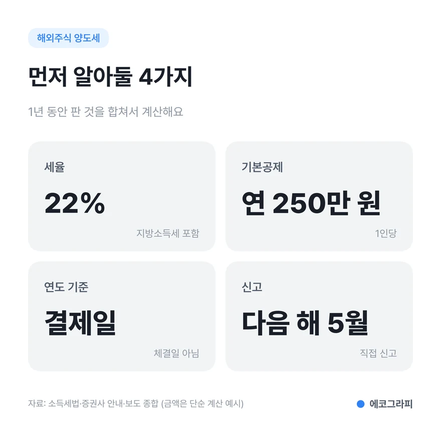
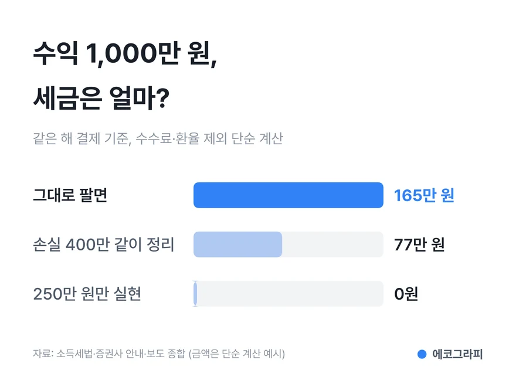
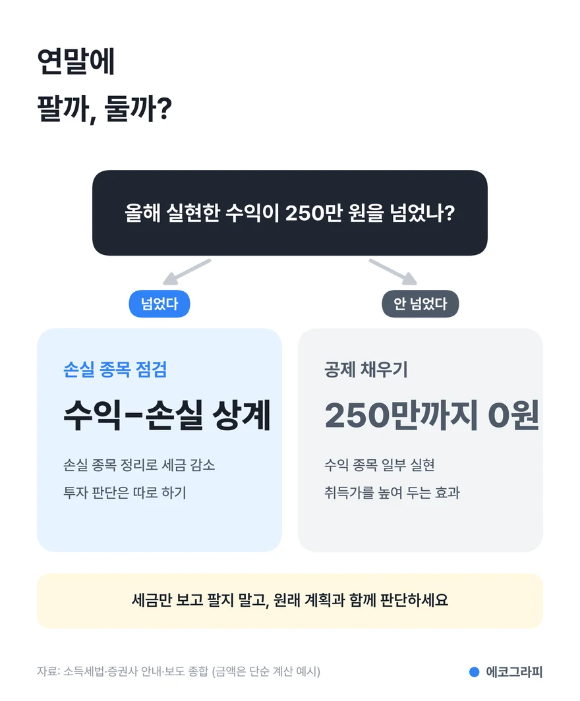
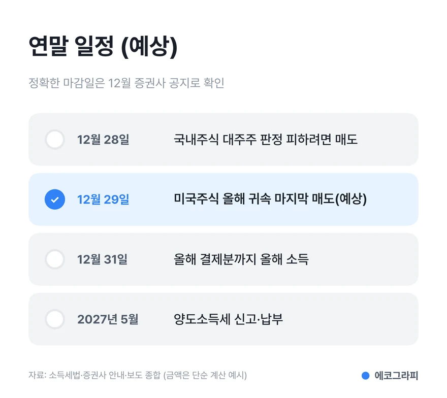

해외주식은 국내 상장주식과 달리 팔아서 생긴 수익에 양도소득세가 붙어요. 1월 1일부터 12월 31일까지 판 것을 모두 합쳐서, 1인당 250만 원을 뺀 나머지에 22%(지방소득세 포함)를 매겨요. 신고는 다음 해 5월에 직접 해요.

한 해 동안 수익 종목과 손실 종목을 모두 팔았다면 둘을 합친 순수익에만 세금이 붙어요. 그래서 이미 수익을 많이 실현했다면, 손실 중인 종목을 연내에 정리하면 세금이 줄어요.

수익 1,000만 원을 그대로 두면 (1,000만 − 250만) × 22% = 약 165만 원이에요. 손실 400만 원짜리 종목을 같은 해에 팔면 순수익이 600만 원이 되어 약 77만 원으로 줄어요.
주의: 세금을 줄이려고 앞으로 오를 것 같은 종목까지 파는 건 본말전도예요. 원래 정리하려던 종목인지 먼저 생각해 보세요.
250만 원 공제는 매년 새로 생기고, 안 쓰면 사라져요. 올해 실현한 수익이 없다면, 오른 종목을 수익 250만 원어치만 팔고 다시 사는 방법을 많이 써요. 세금은 0원이고, 다시 산 가격이 새 취득가가 되어 나중에 낼 세금이 줄어요. 환전·거래 수수료는 따져 봐야 해요.

올해 소득인지는 주문 체결일이 아니라 결제일로 정해요. 작년(2025년)에는 주요 증권사가 미국주식 올해 귀속 마지막 매도일을 12월 29일로 안내했어요. 올해도 비슷할 것으로 보이지만, 12월 초 증권사 공지로 꼭 다시 확인하세요.

국내주식은 종목당 50억 원 이상이면 대주주로 양도세를 내요. 대주주 여부는 연말 보유 기준이라, 올해는 결제일을 감안해 12월 28일까지 팔아야 판정에서 빠진다는 보도가 있어요.
가능해요. 다만 매매 수수료와 환전 비용이 들고, 증권사마다 취득가 계산 방식이 달라 미리 확인하는 게 좋아요.
아니에요. 사람 한 명당 1년에 250만 원이에요. 증권사 여러 곳을 써도 합쳐서 계산해요.
해외 증시에 상장된 ETF는 해외주식과 같은 양도소득세예요. 국내에 상장된 해외 ETF는 배당소득세(15.4%)로 과세 방식이 달라요.
내년 5월 홈택스에서 직접 하거나, 증권사 무료 신고 대행 서비스를 이용할 수 있어요.
※ 2026년 11월 기준으로 정리한 글입니다. 세율·제도는 바뀔 수 있으니 거래 전 증권사·국세청 안내를 한 번 더 확인하세요. 특정 종목·상품의 매수·매도 권유가 아닙니다.